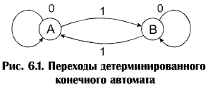
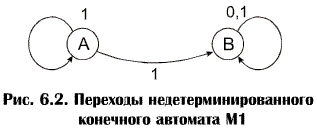
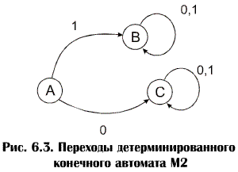

Определение конечного автомата.
Существует полное соответствие между регулярными выражениями (а поэтому и грамматиками типа 3) и конечными автоматами, которые определяются следующим образом:
Конечный автомат – это устройство для распознавания строк какого-либо языка. У него есть конечное множество состояний, отдельные из которых называются последними. По мере считывания каждой литеры строки контроль передается от состояния к состоянию в соответствии с заданным множеством переходов. Если после считывания последней литеры строки автомат будет находиться в одном из последних состояний, о строке говорят, что она принадлежит языку, принимаемому автоматом. В ином случае строка не принадлежит языку, принимаемому автоматом.
Конечный автомат формально определяется пятью характеристиками:
-конечным множеством состояний ( K )
-конечным входным алфавитом ( S )
-множеством переходов ( d )
-начальным состоянием ( S0 Î K )
-множеством последних состояний ( f Î K )
M = ( K , S , d , S0 , f ).
Пример: Состояниями автомата являются А и В, входным алфавитом – {0,1}, начальным состоянием – А, множеством последних состояний – {A}, а переходами
d (А, 0) = А,
d (А, 1) = В,
d (В, 0) = В,
d (В, 1) = А.
Эти переходы означают , что при чтении 0 в состоянии А управление передается в состояние А и т.д. При чтении строки
0 1 0 0 1 0 1 1
управление последовательно передается в следующем порядке через состояния:
А, А, В, В, В, А, А, В, А.
Так как А есть последнее состояние, строка принимается конечным автоматом, однако при чтении строки
0 0 1 1 1
автомат проходит через состояния
А, А, А, В, А, В
поскольку В не является последним состоянием, эта строка не принимается, т.е. она не принадлежит языку, принимаемому этим автоматом. В связи с тем, что нули не влияют на состояние автомата, а каждая единица изменяет его состояние с А на В и с В на А, и начальное состояние является тем же, что и последнее состояние, язык, принимаемый автоматом, состоит из тех строк, которые содержат четное число единиц.
Переходы можно представить с помощью таблицы (таблица 6.1) и схематически (рис.6.1).
|
Состояния |
|||
|
Вход |
|
А |
В |
|
0 |
А |
В |
|
|
1 |
В |
А |
|
Таблица 6.1

Такой автомат называют детерминированным, потому что в каждом элементе таблицы переходов содержится одно состояние. В недетерминированном конечном автомате это положение не выдерживается.
Рассмотрим конечный автомат, определяемый следующим образом:
M1 = ( K1,
S 1, d 1, S1 , f1 ),
Где K1 = {A , В}, S 1= {0,1}, S1 = {А}, f1= {В},
а переходы представлены в таблице 6.2 и на рис.6.2:
Таблица 6.2
|
Состояния |
|||
|
Вход |
|
А |
В |
|
0 |
Ø |
{В} |
|
|
1 |
{A,В} |
{B} |
|

Первая строка будет принята, так как имеется переход (последовательность переходов), ведущий к последнему состоянию при чтении строки. Имеется также переход к непоследнему состоянию, но это не влияет на приемлемость строки. Поэтому прежде чем прийти к выводу о том, что строка не может быть принята недетерминированным конечным автоматом, необходимо перепробовать все возможные последовательности переходов.
Существует детерминированный конечный автомат М2, соответствующий автомату М1, который принимает тот же язык. Переходы автомата М2 приведены в таблице 6.3 и на рис.6.3.
M2 = (K2, S2, d2, S2 , f2 ), где K2 = {A , В , C}, S2= {0,1}, S2 = {А}, f2= {В}
Таблица 6.3
|
Состояния |
||||
|
Вход |
|
А |
В |
C |
|
0 |
C |
В |
C |
|
|
1 |
В |
B |
C |
|

Как и М1, М2 принимает строки из нулей и единиц тогда и только тогда, когда строка начинается с единицы. Однако при распознавании строки с помощью М2 возврат никогда не требуется, т.к. в процессе чтения определенного входного символа из любого состояния произойдет точно один переход к другому состоянию. Это значит, что при использовании М2 время распознавания строки будет пропорционально ее длине.
Соответствие лексическому анализу заключается в том, что каждому языку типа 3 соответствует детерминированный конечный автомат, который распознает строки этого языка. Например, строки, генерируемые грамматикой G1c порождающими правилами:
А ® 1А | 1В | 1
В ® 0В | 1В | 0 | 1
где А – начальный символ, распознаются с помощью М1 или М2. Грамматику получают из недетерминированного конечного автомата М1 следующим образом:
1. Начальное состояние автомата становится начальным символом предложения грамматики.
2. Переходам
d (А, 1) = А,
d (А, 1) = В,
d (В, 0) = В,
d (В, 1) = В.
соответствуют порождающие правила
А ® 1А | 1В
В ® 0В | 1В
тому, что в состоянии А есть переход при чтении 1 к последнему состоянию В соответствует
А ® 1
и аналогично
В ® 0 | 1
Можно также, наоборот, из грамматики вывести автомат М1.